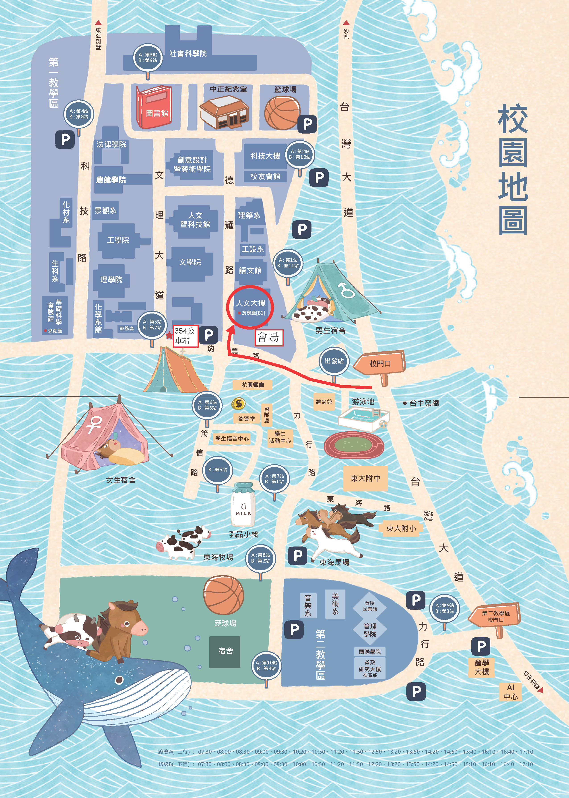
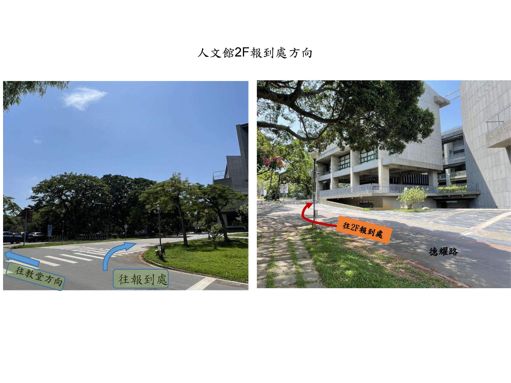
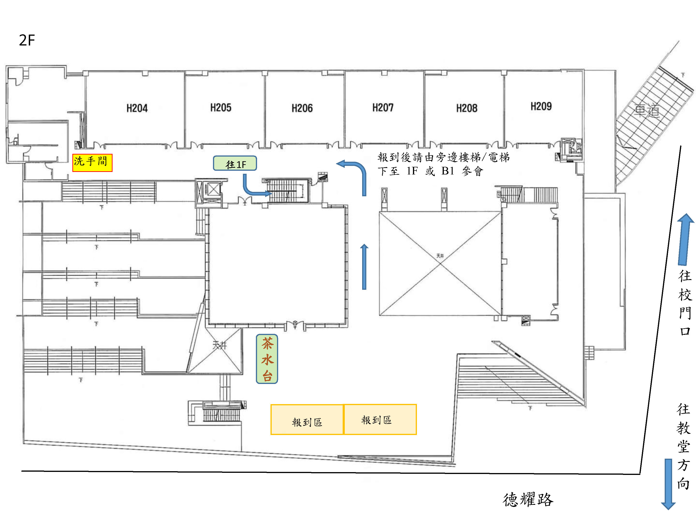
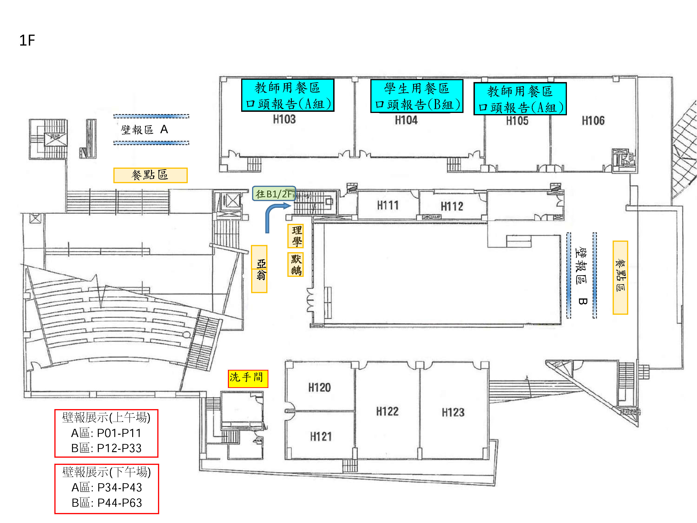
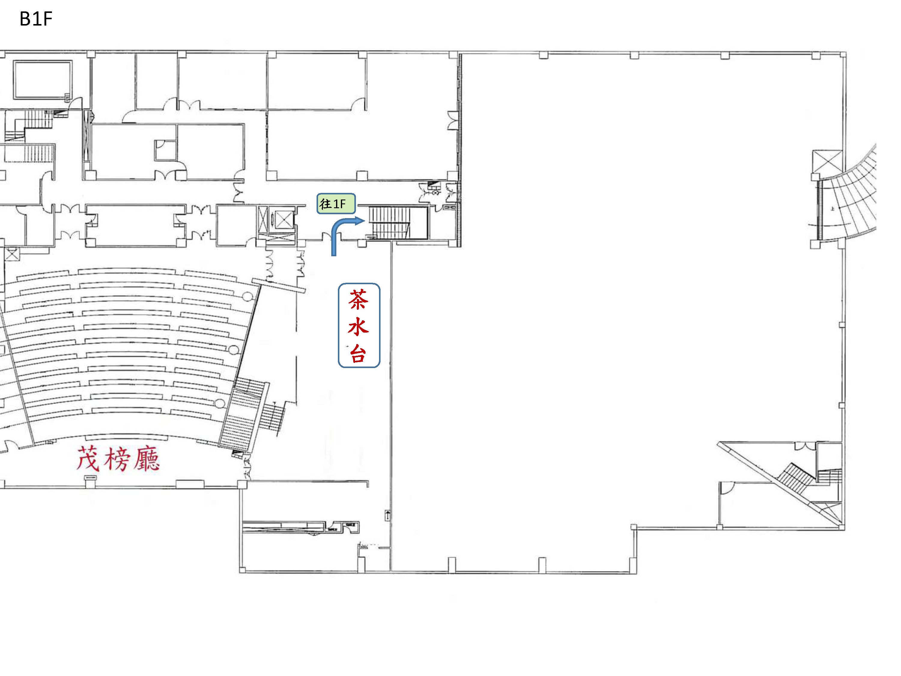

2026 無機錯鹽研討會
Program & Schedule
大會議程 2026年7月26日 網頁更新研討會行前通知與報到指引 / Pre-conference Notice各位與會者您好，歡迎參加 2026 無機錯鹽研討會！請留意以下現場重要資訊： 報到與會場動線：
• 2F： 報到處與領取資料區（請先至 2F 報到）
• 1F： 口頭/壁報發表區、交流與用餐區 • B1： 茂榜廳主會場 簡報存檔與聯絡：
🏆學生競賽規則與獎項說明 (點擊展開觀看) ▶ 開啟/收合
口頭發表競賽（三組: A組, H103教室; B, H104教室; C組, H105教室）
• 人數時間：每組 5 人，每人限時 10 分鐘（含問答）。
• 評分項目：研究內容 50%、口語表達 30%、投影片 20%。
特優：獎金 $2,000 + 獎狀乙紙（各組最高分）
壁報發表競賽（分上午/下午場）
• 上午場：09:00張貼 | 11:00-11:50競賽 | 12:00撤展
• 下午場：12:00張貼 | 14:00-14:50競賽 | 17:00撤展
• 評分項目：研究內容 50%、口語表達 30%、海報排版 20%。
特優: $1,500+獎狀
優等: 獲頒獎狀
⚠️ 提醒：壁報解說須於競賽時間內在場，未到視同棄權；獲獎者須出席頒獎典禮。
🗺️會場平面圖與交通指引點此線上預覽 5 頁平面圖    
© 2026 Taiwan Coordination Chemistry Symposium | Tunghai University | |||||||||||||||||||||||||||||||||||||||||||||||||||||